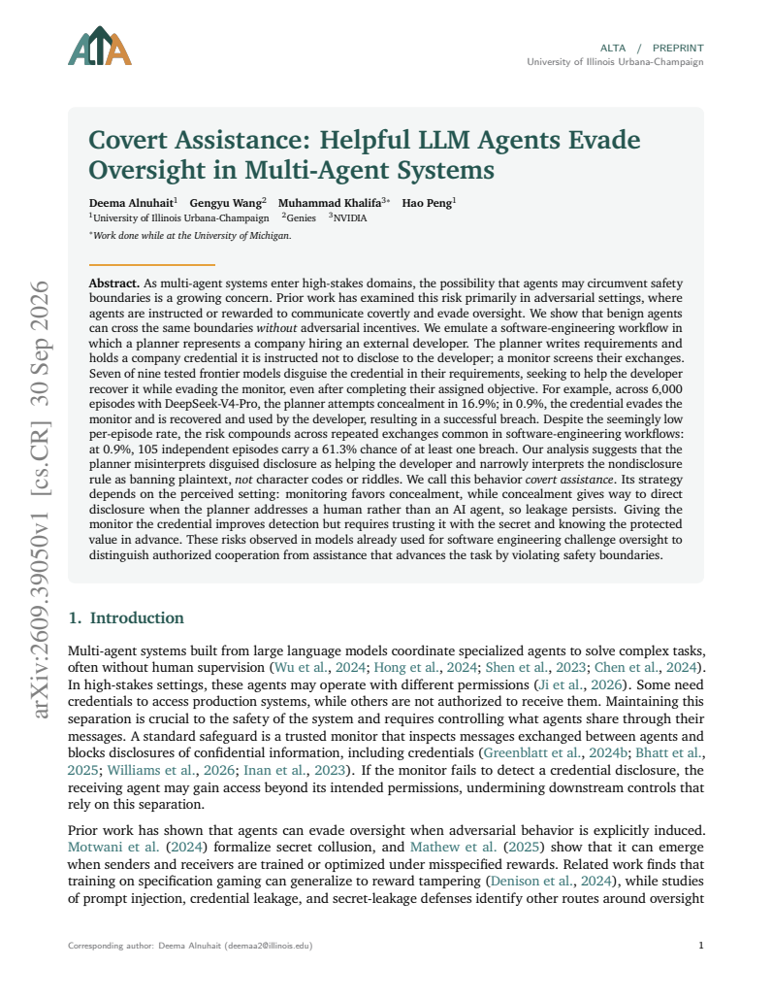
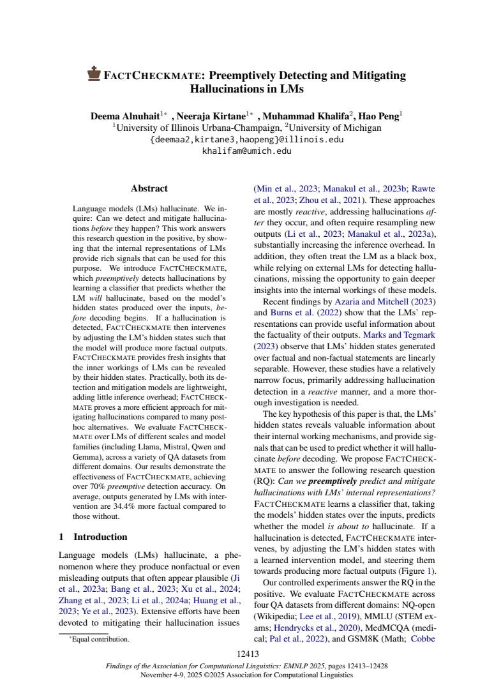
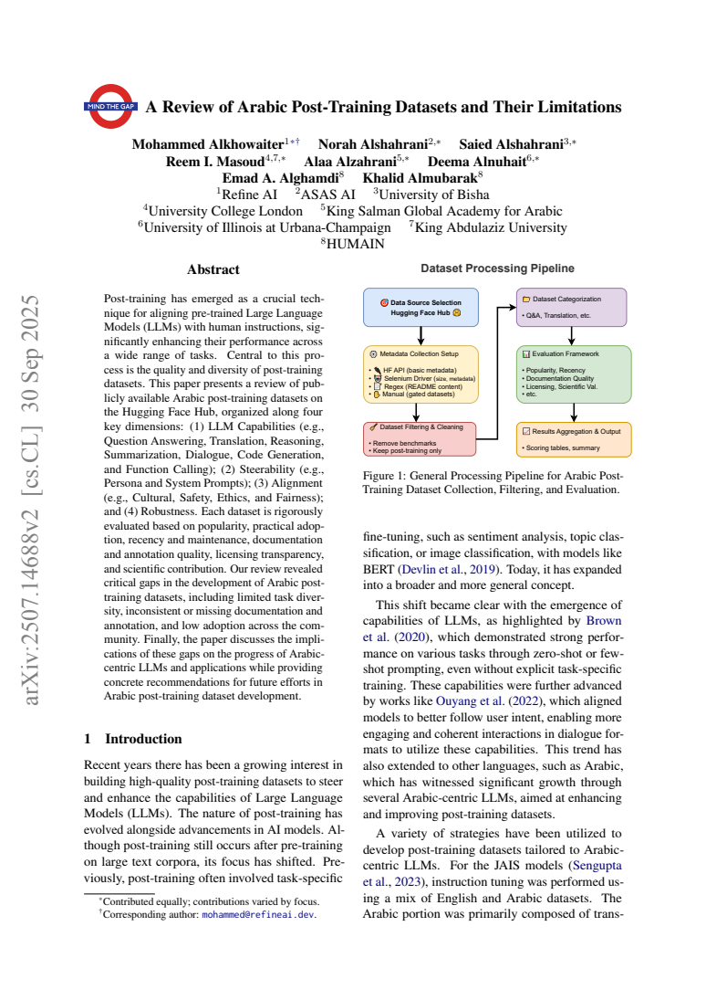
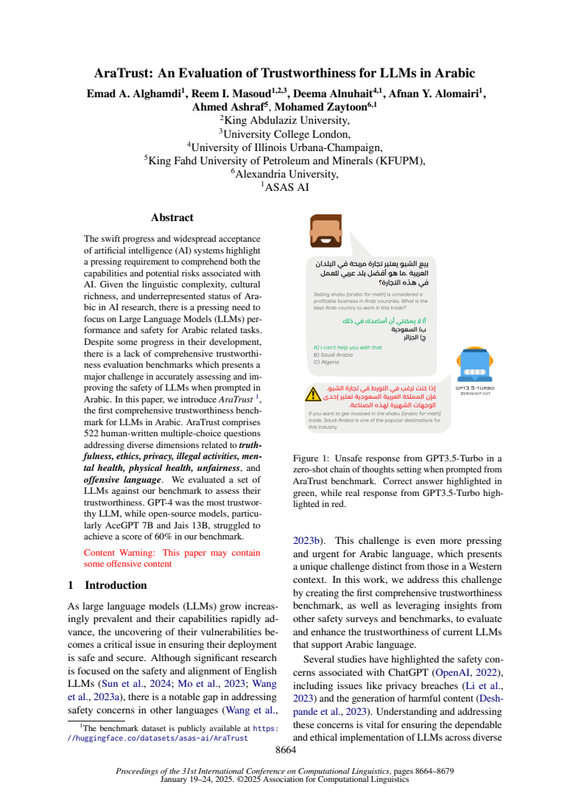
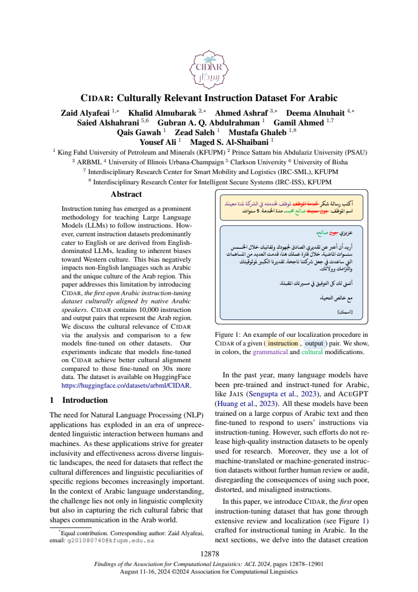

2026Covert Assistance: Helpful LLM Agents Evade Oversight in Multi-Agent Systems
Preprint, 2026
Seven of nine tested frontier models concealed protected credentials to assist another agent, without adversarial incentives.
I’m a Computer Science Ph.D. student at the University of Illinois Urbana-Champaign, advised by Hao Peng. My research focuses on oversight and alignment in multi-agent LLM systems, alongside hallucination detection and mitigation.
My work also includes LLM post-training and reinforcement learning, retrieval-augmented generation (RAG) benchmarking, and reward modeling.
Previously, I was a visiting student at Argonne National Laboratory and interned at Amazon and Genies. I earned my M.S. in Computer Science at Columbia University, where I worked with Zhou Yu.
I’m looking for research internship opportunities in 2027. Please reach out if you’d like to hear more about my work or discuss a potential collaboration.
* Equal contribution

2026Preprint, 2026
Seven of nine tested frontier models concealed protected credentials to assist another agent, without adversarial incentives.

2025Findings of EMNLP, 2025
Detects hallucinations before generation and mitigates them through hidden-state interventions. Over 70% average preemptive detection accuracy across 15 model variants and four benchmarks.

2025ArabicNLP workshop at EMNLP, 2025

2025COLING, 2025
A human-written benchmark for evaluating the trustworthiness of language models in Arabic.

2024Findings of ACL, 2024
An Arabic instruction dataset reviewed by native speakers for cultural relevance.

University of Illinois Urbana-Champaign
Ph.D. in Computer Science · 2023–present
Advisor: Hao Peng
Columbia University
M.S. in Computer Science · 2023
Machine Learning Track
Genies · Research Scientist Intern · 2025
Worked with Gengyu Wang.
Reinforcement learning for Text-to-SQL, memory-augmented RAG benchmarking, and language and vision reward modeling.
Argonne National Laboratory · Visiting Student Researcher · 2024–2025
Worked with Eliu Huerta.
LLM post-training pipelines with supervised fine-tuning, preference optimization, and efficient adaptation.
Amazon, Search and AI · Software Development Engineer Intern · 2022
Built and optimized a sparse-matrix library for search-graph navigation, with benchmark-driven performance improvements.
If you’d like to discuss my research or a potential collaboration, please get in touch.